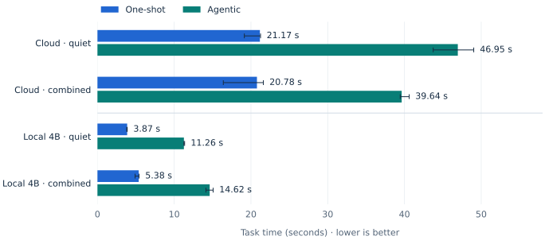
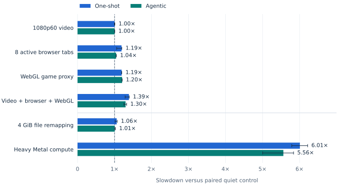

Edge AI / measured on a working laptop
When local AI
shares your GPU.
Everyday desktop load added 30–39% to our local research task. Heavy GPU compute stretched the same task to nearly six times its quiet latency.
Cloud service and local 4B
One-shot receives six frozen robotics source cards. The agent chooses sources, reads text and screenshots, then synthesizes an answer. “Quiet” retains existing apps but adds no benchmark load.

Different-quality application baselines. Cloud uses the signed-in Codex CLI/service (GPT-6 Astra, high reasoning), including client/service overhead—not raw API latency. Local uses Holo 3.1 4B, MLX 4-bit. Different reasoning, calls and answers prevent an equal-quality speedup claim; the lower cloud time under load is not evidence that contention helps.
GPU competition dominates these tests

Heavy compute raised one-shot latency 4.62 → 27.28 s and agent latency 13.46 → 74.70 s. One-shot decoding fell 69.7 → 10.9 tokens/s. Completed local outputs were identical across contention conditions.
Heavy load repeats 4096² FP16 matrix multiplies on Metal. The 4 GiB mapping test generated page faults but no swap writes; it does not establish sustained SSD thrashing. A 9B load and a RAM-pressure probe hit the swap guard before inference, so neither has a latency result.
35B-A3B NVFP4 ran—with expert paging
The 23.69 GB checkpoint used a custom Metal adapter, BF16 dense matrices and a 2 GB disk-backed expert cache. This is a separate execution experiment, with no added contender.
| 35B request | Task time | Peak MLX memory | Final answer |
|---|---|---|---|
| One-shot | 258.00 s | 7.33 GB | 211 words |
| Agent · 4 calls | 290.23 s | 8.75 GB | 127 words |
One observation each; load excluded, first-use work included. No extra host swap writes during this 35B attempt. Custom paging, precision and warmup differ from 4B; these are not native NVIDIA NVFP4 speeds or an isolated model-size comparison.
Completion is not correctness. The 35B agent omitted the frontier-policy comparison and missed the 180–230-word target. The 4B answers also missed that target: 174 words one-shot, 93 agentic. Timing alone does not establish research quality.
What this establishes
For this fixed task, shared GPU compute is a substantial latency risk. The useful next test is whether admission control or scheduling can protect agent deadlines while preserving foreground responsiveness.
Method, boundaries & cleanup
Native macOS, AC power, MLX 0.32.2 / MLX-VLM 0.7.0. The 4B model uses the pipenetwork conversion, revision 7c3327a5765ab21cefe2d91e953d1038b1d3ef3e. The 35B checkpoint revision is 76ebefd59b500fe55e1afa45995aa8553198ee6e; all 40 layers and 256 experts per layer are retained. Sampled custom-kernel numeric checks passed, but full-model backend quality parity was not tested.
The source fixture covers low-cost arms, SmolVLA, OpenPI, frontier robotics policies and computer use. Agent actions are allowlisted source reads, limited to eight calls and at least three distinct sources. This measures bounded retrieval/synthesis with screenshots, not live web research, unrestricted computer control or physical robot performance.
4B loading and two vision warmups are outside task timing. The stress campaign has fresh quiet controls: GPU 4.62/13.46 s and file-remapping 4.62/13.56 s (one-shot/agentic). Median paired ratios need not equal ratios of medians. Three repetitions characterize observed spread, not p95 latency or confidence intervals. Existing desktop activity, cache history and thermal transitions remain confounders.
Supervisors bounded duration, memory pressure, swap writes and thermal state. The 9B and RAM probes stopped after 582 and 833 MiB of host swap writes respectively; sampled guards can overshoot their 512 MiB trigger. Those are stopped setup attempts, not completed inference tests. All owned benchmark workers were stopped; 11.75 GB of stress fixtures and 46.75 GB of 35B temporary files were removed. Final thermal state was nominal. The reusable 4B environment and evidence remain.